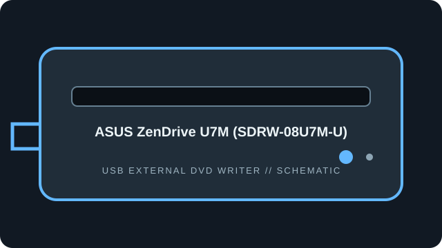

[ EXTERNAL DVD WRITERS // IDENTIFIED MODEL ]
ASUS ZenDrive U7M (SDRW-08U7M-U)
Slim external USB DVD writer with DVD-RAM and M-DISC media support. These ratings identify the U7M model and are not interchangeable with other ZenDrive revisions.

IDENTIFICATION: Match the full model/suffix and any bundled part number against the unit label and cited manual. Rated maximums depend on media, firmware, and operating mode; read support is not write support.
Documented specifications
| Catalog subcategory | External DVD writers |
|---|---|
| Exact model | ASUS ZenDrive U7M (SDRW-08U7M-U) |
| Read media formats | CD-ROM, CD-R/RW; DVD-ROM, DVD±R/RW, DVD±R DL, DVD-RAM and DVD+R SL M-DISC. |
| Rated read speeds | DVD-ROM/recordable DVD up to 8×; DVD-RAM up to 5×; CD-ROM/CD-R up to 24×. |
| Write media formats | CD-R/RW; DVD±R, DVD±RW, DVD±R DL, DVD-RAM and DVD+R SL M-DISC. |
| Rated write speeds | DVD±R up to 8×; DVD+RW up to 8×; DVD-RW up to 6×; DVD±R DL up to 6×; DVD-RAM up to 5×; M-DISC DVD+R SL up to 4×; CD-R/RW up to 24×. |
| USB interface | External slim USB 2.0 peripheral; supplied USB cable/power arrangement is package-specific. Avoid unpowered hubs if the drive is not reliably detected. |
| OS / firmware compatibility | ASUS support documentation lists Windows 8/8.1/10/11 and Mac OS X 10.6 or later for this model. Firmware: no revision/update is stated by the cited spec; use only files labelled SDRW-08U7M-U. |
| Model distinction | The U7M spec page explicitly rates M-DISC writing at 4×; it is not the U9M M-DISC SKU. |
Use, compatibility & preservation
- External slim USB 2.0 peripheral; supplied USB cable/power arrangement is package-specific. Avoid unpowered hubs if the drive is not reliably detected.
- ASUS support documentation lists Windows 8/8.1/10/11 and Mac OS X 10.6 or later for this model. Firmware: no revision/update is stated by the cited spec; use only files labelled SDRW-08U7M-U.
- The U7M spec page explicitly rates M-DISC writing at 4×; it is not the U9M M-DISC SKU.
- Record drive model and reported firmware, host OS, USB controller, application version, disc format, media brand and any read or verification errors when imaging.
- Keep checksummed image copies and logs; store discs in cases away from heat, moisture and direct sunlight. Avoid adhesive labels, abrasives and undocumented solvents.
Firmware support is model-specific: do not cross-flash a related product family or infer an update from an adjacent suffix.
Sources
- ASUS ZenDrive U7M SDRW-08U7M-U — Tech SpecsManufacturer speed and write-format table for the exact U7M model.
- ASUS SDRW-08U7M-U support and manualsModel-specific support/manual locator; consult the included manual for OS and connection details.